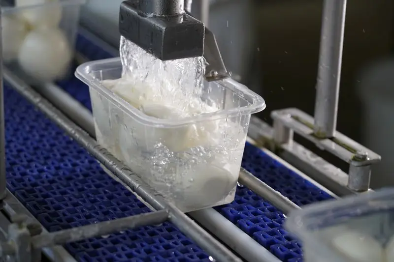
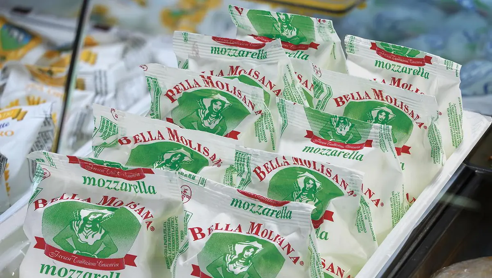
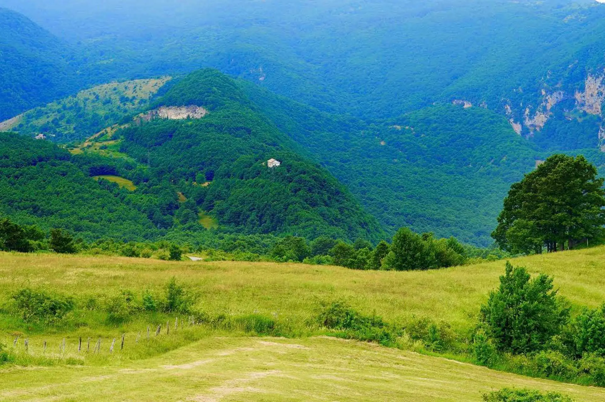
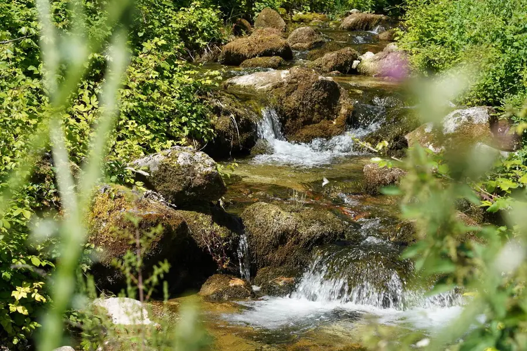
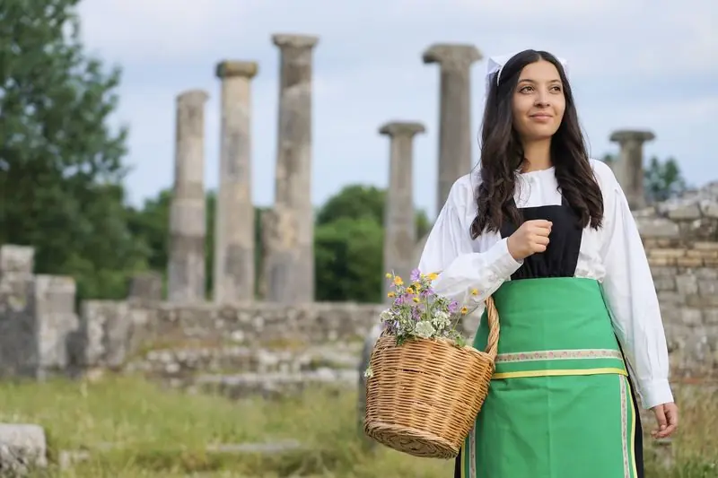
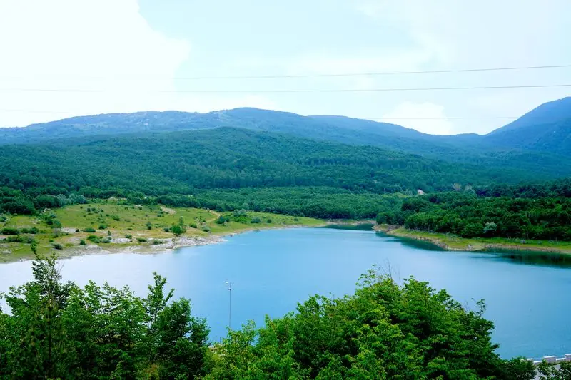
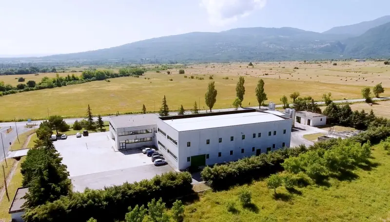
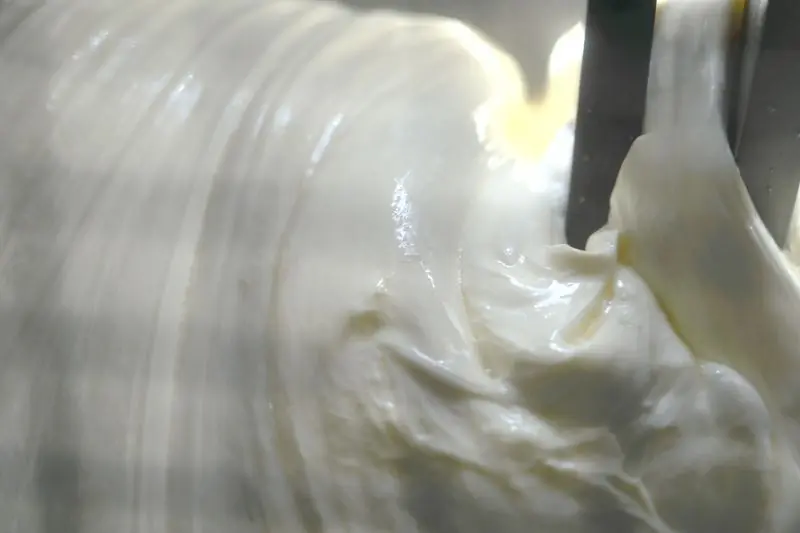
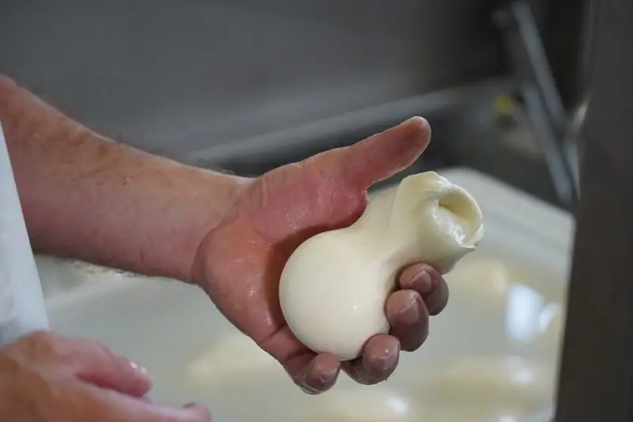
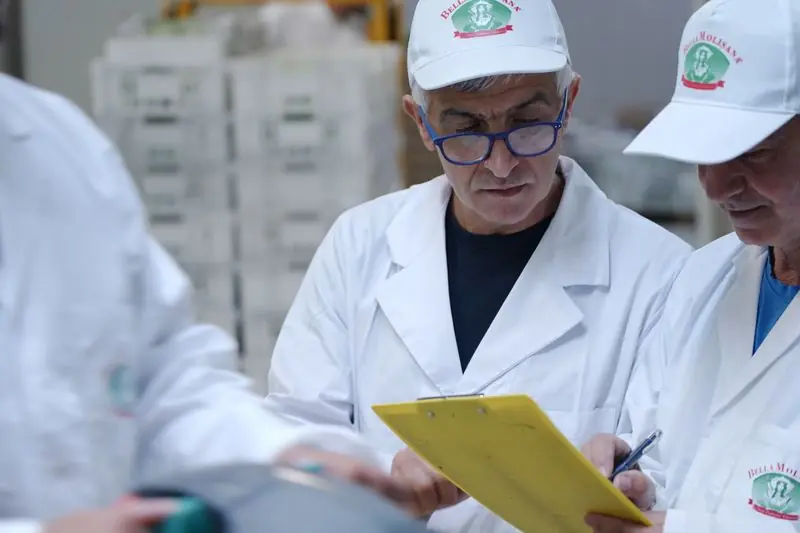

Ricetta naturale
Solo latte, sale, caglio e fermenti lattici nelle nostre mozzarelle.
Campochiaro · Molise · dal latte all'alba
La mozzarella slow del Matese: quattro ingredienti, sedici ore di lavorazione e l'acqua sorgiva che scende dalla montagna.
Una lunga storia molisana
Bella Molisana produce i suoi latticini ogni giorno, nel rispetto della tradizione casearia molisana: pochi ingredienti semplici e genuini, lavorati seguendo le ricette tipiche del territorio.
L'anima tradizionale la si ritrova nel lungo processo produttivo: servono sedici ore, il tempo giusto perché i fermenti lattici facciano maturare il latte che poi diventa pasta filata. E poi la filatura, l'annodatura delle trecce e dei nodini, la testina della scamorza appassita: gesti affidati all'abilità dei nostri mastri casari.
Una rete distributiva capillare porta le mozzarelle in tutti i punti vendita entro poche ore dalla produzione.
Solo latte, sale, caglio e fermenti lattici nelle nostre mozzarelle.
Sedici ore di lavorazione, con i soli fermenti lattici vivi.
Filiamo la cagliata, annodiamo trecce e nodini, formiamo le testine delle scamorze.
La nostra mozzarella è slow
Dal latte pastorizzato alla vaschetta, come si faceva secoli fa. Scorri e segui la giornata del caseificio.
Da quando sei qui, nelle vasche del Matese si sono tuffate 0 mozzarelle Bella Molisana.
Una ricetta bella sana
Ingredienti
Nient'altro. E l'acqua del Matese, dove le mozzarelle appena fatte vengono tuffate.
I nostri prodotti caseari

Nello scaffale frigo
Mozzarelle, treccine, bocconcini, nodini e ricotta in vaschetta; le scamorze appassite sottovuoto; il burro di panna, anche senza lattosio, in carta pergamena. Così la freschezza arriva intatta e incontaminata dal caseificio alla tua tavola.

Al banco gastronomia
La mozzarella in diverse grammature incartata in carta pergamena, la scamorza appassita anche affumicata, la ricotta delicata e la sfoglia di mozzarella, già condita o da condire con i gusti della tua fantasia.

Una storia molisana
Bella Molisana nasce a Campochiaro, alle falde del Matese: un luogo puro e incontaminato da cui attinge il suo ingrediente di purezza, l'acqua. Le mozzarelle vengono lavorate con le acque sorgive del Matese, che sgorgano a poca distanza dallo stabilimento.
Il nostro territorio è terra di pastorizia fin dai tempi dei Sanniti ed è attraversato da un'antica via della transumanza, il tratturo Pescasseroli–Candela. Ai primi freddi greggi, mandrie e pastori scendevano dai pascoli di montagna verso le pianure.
Da qui nasce la scamorza appassita: quando i viaggi erano lenti, un formaggio poco umido durava di più.
Vicino a noi c'è Altilia, l'area archeologica sannita più importante della storia antica: da sempre questi luoghi sono scenario di pastorizia, transumanza e grande tradizione casearia.
Campochiaro è compreso nell'Oasi WWF di Guardiaregia, la seconda oasi d'Italia per estensione. In questa bellezza affonda le radici la ricetta molisana: la maturazione della cagliata con i soli fermenti lattici vivi.
Depositi dislocati sul territorio e una rete che funziona come un orologio: le prime mozzarelle partono il giorno stesso in cui sono state lavorate e raggiungono ogni punto vendita in un raggio di 300 km entro 12 ore.
Campochiaro (CB)




Il gusto di Bella Molisana è unico: perfino i bambini, assaggiando una mozzarella, capiscono se è Bella Molisana o no.

Il momento della filatura è delicato e da esso dipende tutta la qualità della mozzarella. Da noi non lo decide nessuna macchina: è il casaro che frantuma con le mani un pugno di cagliata, lo getta nell'acqua a circa 85 °C, lo fonde con un bastoncino di legno e lo stira fino a ottenere un filo continuo.
Così la pasta diventa un nastro setoso, lucido e morbido, plastico e formabile. Le mozzarelle si consolidano nell'acqua fredda corrente.
Quella industriale è nel rigore produttivo, nell'attenzione alla sicurezza alimentare e nella scelta della vaschetta, che porta il prodotto integro dalla linea alla tavola.
Quella tradizionale è nella filatura, nell'annodatura, nella testina della scamorza, tutte a cura del mastro casaro, e nei tempi più lunghi dei fermenti lattici vivi.

Sono i protagonisti della magia di Bella Molisana e si tramandano il sapere di generazione in generazione. Governano la cagliatura, colgono il momento unico della filatura, intrecciano e formano la pasta, poi tuffano i prodotti morbidi e bianchi nell'acqua sorgiva del Matese.
La magia è conclusa.
Certificazioni
Lo stabilimento di Campochiaro è conforme agli standard del Food Safety Management ISO 22000:2018, lo standard proprio del settore alimentare basato sui principi HACCP del Codex Alimentarius.
Non è obbligatorio, ma è un vero punto di riferimento nell'applicazione dei regolamenti comunitari su sicurezza alimentare e igiene.

Parla con noi
Scrivici il tuo CAP o la località in cui vivi e ti indicheremo il negozio più vicino. Assaggia le nostre specialità e dicci cosa ne pensi: siamo attentissimi al parere dei nostri consumatori.
Numero verde · Servizio consumatori800 01 01 88La mappa è di Google e si carica solo se la chiedi.